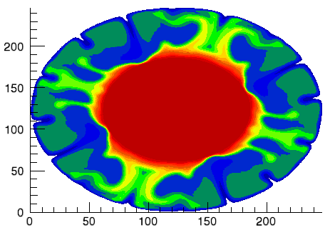
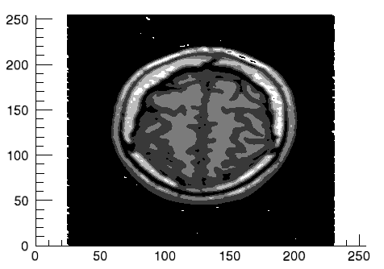
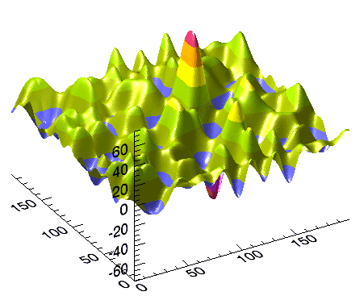

Note: Please see the CONTOUR function, which replaces the functionality of this routine.
Note: If no arguments are specified, the ICONTOUR procedure creates an empty Contour tool.
Contour colors can be specified in several ways. By default, all contour levels are black. The COLOR keyword can be used to change the color of all contour levels. For example, you can change contour levels to red by setting COLOR = [255, 0, 0]. Individual color levels can be specified when the iContour tool is in palette color mode, which allows a color table to be used. You can activate the palette color mode from the IDL Command Line by setting either of the RGB_TABLE or RGB_INDICES keywords, or from the iContour tool’s property sheet by changing the Use palette color setting to True.
Note: If you are not in the palette color mode, the colors of individual levels may be modified in the contour level properties dialog. If you are in the palette color mode, the ability to edit individual colors in the contour level properties dialog is disabled. However, changing the Use palette color setting to False does not switch you back to previously set colors. It simply converts the colors referenced by indices to direct color values that can be individually modified. A common practice is to switch to palette color mode, select a palette, then change Use palette color to False. The colors of the palette are now loaded as individual contour colors that can each be edited in the contour level properties dialog.
If the iContour tool is in palette color mode, a colorbar can be inserted through the Insert menu. The colorbar displays a sample of the current palette associated with the contour display. The data values of the axis of the colorbar are based on the data range of the Z argument and the contour level values.
The minimum value of the colorbar axis represents the minimum of the data range. The maximum value of the axis is the greater of than the maximum of the data range and the highest contour level value.
Note: When IDL computes default contour levels, the highest contour level may be above the maximum value of the data.
ICONTOUR[, Z[, X, Y]] [, AM_PM=vector] [, ANISOTROPY=[x, y, z]] [, C_COLOR=array] [, C_FILL_PATTERN=array] [, C_LABEL_INTERVAL=vector] [, C_LABEL_NOGAPS=vector] [, C_LABEL_OBJECTS=array] [, C_LABEL_SHOW=vector] [, C_LINESTYLE=array] [, C_THICK=float array{each element 1.0 to 10.0}] [, C_USE_LABEL_COLOR=vector] [, C_USE_LABEL_ORIENTATION=vector] [, C_VALUE=scalar or vector] [, CLIP_PLANES=array] [, COLOR=RGB vector] [, DAYS_OF_WEEK=vector] [, DEPTH_OFFSET =integer] [, /DOWNHILL] [, /FILL] [, GRID_UNITS=value] [, /HIDE] [, INSERT_COLORBAR=value] [, INSERT_LEGEND=value] [, LABEL_FONT=objref] [, LABEL_FORMAT=string] [, LABEL_FRMTDATA=value] [, LABEL_UNITS=string] [, MAX_VALUE=value] [, MIN_VALUE=value] [, MONTHS=vector ] [, N_LEVELS=value] [, /PLANAR] [, RGB_INDICES=vector] [, RGB_TABLE=array] [, SHADE_RANGE=[min, max] ] [, SHADING={0 | 1}] [, TICKINTERVAL=value] [, TICKLEN=value] [, TRANSPARENCY=value] [, USE_TEXT_ALIGNMENTS=value] [, ZVALUE=value]
A vector or two-dimensional array specifying the x-coordinates for the contour surface. If X is a vector, each element of X specifies the x-coordinate for a column of Z (e.g., X[0] specifies the x-coordinate for Z[0, *]). If X is a two-dimensional array, each element of X specifies the x-coordinate of the corresponding point in Z (i.e., Xij specifies the x-coordinate for Zij).
A vector or two-dimensional array specifying the y-coordinates for the contour surface. If Y is a vector, each element of Y specifies the y-coordinate for a row of Z (e.g., Y[0] specifies the y-coordinate for Z[*,0]). If Y is a two-dimensional array, each element of Y specifies the y-coordinate of the corresponding point in Z (Yij specifies the y-coordinate for Zij).
A vector or two-dimensional array containing the values to be contoured. If the X and Y arguments are provided, the contour is plotted as a function of the (x, y) locations specified by their contents. Otherwise, the contour is generated as a function of the two-dimensional array index of each element of Z.
Note: Keywords to the ICONTOUR routine that correspond to the names of registered properties of the iContour tool must be specified in full, without abbreviation.
Set this keyword to a vector of 2 strings indicating the names of the AM and PM strings when processing explicitly formatted dates (CAPA, CApA, and CapA format codes) with the LABEL_FORMAT keyword.
Set this keyword equal to a three-element vector [x, y, z] that represents the multipliers to be applied to the internally computed correction factors along each axis that account for anisotropic geometry. Correcting for anisotropy is particularly important for the appropriate representations of downhill tickmarks.
By default, IDL will automatically compute correction factors for anisotropy based on the [XYZ] range of the contour geometry. If the geometry (as provided via the GEOMX, GEOMY, and GEOMZ keywords) falls within the range [xmin, ymin, zmin] to [xmax, ymax, zmax], then the default correction factors are computed as follows:
dx = xmax - xmin
dy = ymax - ymin
dz = zmax - zmin
; Get the maximum of the ranges:
maxRange = (dx > dy) > dz
IF (dx EQ 0) THEN xcorrection = 1.0 ELSE $
xcorrection = maxRange / dx
IF (dy EQ 0) THEN ycorrection = 1.0 ELSE $
ycorrection = maxRange / dy
IF (dz EQ 0) THEN zcorrection = 1.0 ELSE $
zcorrection = maxRange / dz
This internally computed correction is then multiplied by the corresponding [x, y, z] values of the ANISOTROPY keyword. The default value for this keyword is [1,1,1]. IDL converts, maintains, and returns this data as double-precision floating-point.
Set this keyword to a 3 by N array of RGB colors representing the colors to be applied at each contour level. If there are more contour levels than elements in this vector, the colors will be cyclically repeated. If C_COLOR is set to 0, all contour levels will be drawn in the color specified by the COLOR keyword (this is the default).
However, the C_COLOR keyword does not activate the palette color mode, which is recommended when working with contour levels and color. This mode can be activated with the RGB_INDICES and RGB_TABLE keywords. See Using Palettes for more details.
Set this keyword to an array of IDLgrPattern objects representing the patterns to be applied at each contour level if the FILL keyword is non-zero. If there are more contour levels than fill patterns, the patterns will be cyclically repeated. If this keyword is set to 0, all contour levels are filled with a solid color (this is the default).
Set this keyword to a vector of values indicating the distance (measured parametrically relative to the length of each contour path) between labels for each contour level. If the number of contour levels exceeds the number of provided intervals, the C_LABEL_INTERVAL values will be repeated cyclically. The default is 0.4.
Set this keyword to a vector of values indicating whether gaps should be computed for the labels at the corresponding contour value. A zero value indicates that gaps will be computed for labels at that contour value; a non-zero value indicates that no gaps will be computed for labels at that contour value. If the number of contour levels exceeds the number of elements in this vector, the C_LABEL_NOGAPS values will be repeated cyclically. By default, gaps for the labels are computed for all levels (so that a contour line does not pass through the label).
Set this keyword to an array of object references to provide examples of labels to be drawn for each contour level. The objects specified via this keyword must inherit from one of the following classes:
| • | IDLgrSymbol |
| • | IDLgrText |
If a single object is provided, and it is an IDLgrText object, each of its strings will correspond to a contour level. If a vector of objects is used, any IDLgrText objects should have only a single string; each object will correspond to a contour level.
By default, with C_LABEL_OBJECTS set equal to a null object, IDL computes text labels that are the string representations of the corresponding contour level values.
Note: The objects specified via this keyword are used as descriptors only. The actual objects drawn as labels are generated by IDL.
The contour labels will have the same color as their contour level (see C_COLOR) unless the C_USE_LABEL_COLOR keyword is specified. The orientation of the label will be automatically computed unless the C_USE_LABEL_ORIENTATION keyword is specified. The horizontal and vertical alignment of any text labels will default to 0.5 (i.e., centered) unless the USE_TEXT_ALIGNMENTS keyword is specified.
Note: The object(s) set via this keyword will not be destroyed automatically when the contour is destroyed.
Set this keyword to a vector of integers. For each contour value, if the corresponding value in the C_LABEL_SHOW vector is non-zero, the contour line for that contour value will be labeled. If the number of contour levels exceeds the number of elements in this vector, the C_LABEL_SHOW values will be repeated cyclically. The default is 0 indicating that no contour levels will be labeled.
Set this keyword to an array of linestyles representing the linestyles to be applied at each contour level. The array may be either a vector of integers representing pre-defined linestyles, or an array of 2-element vectors representing a stippling pattern specification. If there are more contour levels than linestyles, the linestyles will be cyclically repeated. If this keyword is set to 0, all levels are drawn as solid lines (this is the default).
To use a pre-defined line style, set this property equal to one of the following integer values:
|
0 |
Solid line (the default) |
|
1 |
Dotted |
|
2 |
Dashed |
|
3 |
Dash dot |
|
4 |
Dash dot dot dot |
|
5 |
Long dash |
|
6 |
No line drawn |
To define your own stippling pattern, specify a two-element vector [repeat, bitmask], where repeat indicates the number of times consecutive runs of 1’s or 0’s in the bitmask should be repeated. (That is, if three consecutive 0’s appear in the bitmask and the value of repeat is 2, then the line that is drawn will have six consecutive bits turned off.) The value of repeat must be in the range 1 ≤ repeat ≤ 255.
The bitmask indicates which pixels are drawn and which are not along the length of the line. Bitmask is most conveniently specified as a 16-bit hexadecimal value.
For example, LINESTYLE = [2, 'F0F0'X] describes a dashed line (8 bits on, 8 bits off, 8 bits on, 8 bits off).
Set this keyword to an array of line thicknesses representing the thickness to be applied at each contour level, where each element is a value between 1.0 and 10.0 points. If there are more contour levels than line thicknesses, the thicknesses will be cyclically repeated. If this keyword is set to 0, all contour levels are drawn with a line thickness of 1.0 points (this is the default).
Set this keyword to a vector of values (0 or 1) to indicate whether the COLOR property value for each of the label objects (for the corresponding contour level) is to be used to draw that label. If the number of contour levels exceeds the number of elements in this vector, the C_USE_LABEL_COLOR values will be repeated cyclically. By default, this value is zero, indicating that the COLOR properties of the label objects will be ignored, and the C_COLOR property for the contour object will be used instead.
Set this keyword to a vector of values (0 or 1) to indicate whether the orientation for each of the label objects (for the corresponding contour level) is to be used when drawing the label. For text, the orientation of the object corresponds to the BASELINE and UPDIR property values; for a symbol, this refers to the default (un-rotated) orientation of the symbol. If the number of contour levels exceeds the number of elements in this vector, the C_USE_LABEL_ORIENTATION values will be repeated cyclically. By default, this value is zero, indicating that orientation of the label object(s) will be set to automatically computed values (to correspond to the direction of the contour paths).
Set this keyword to a scalar value or a vector of values for which contour values are to be drawn. If this keyword is set to 0, contour levels will be evenly sampled across the range of the Z argument, using the value of the N_LEVELS keyword to determine the number of samples. IDL converts, maintains, and returns this data as double-precision floating-point.
Set this keyword to an array of dimensions [4, N] specifying the coefficients of the clipping planes to be applied to this object. The four coefficients for each clipping plane are of the form [A, B, C, D], where Ax + By + Cz + D = 0. Portions of this object that fall in the half space Ax + By + Cz + D > 0 will be clipped. By default, the value of this keyword is a scalar (-1) indicating that no clipping planes are to be applied.
Note: A window is only able to support a limited number of clipping planes. Some of these clipping planes may already be in use by the tool to support specific data display features. If the total number of clipping planes exceeds the limit, an informational message is displayed.
Set this keyword to the color to be used to draw the contours. This color is specified as an RGB vector. The default is [0, 0, 0]. This value will be ignored if the C_COLOR keyword is set to a vector.
Set this keyword to a vector of 7 strings to indicate the names to be used for the days of the week when processing explicitly formatted dates (CDWA, CDwA, and CdwA format codes) with the LABEL_FORMAT keyword.
Set this keyword to an integer value that specifies an offset in depth to be used when rendering filled primitives. This offset is applied along the viewing axis, with positive values moving the primitive away from the viewer. The units are “Z-Buffer units,” where a value of 1 is used to specify a distance that corresponds to a single step in the device’s Z-Buffer.
Use DEPTH_OFFSET to always cause a filled primitive to be rendered slightly deeper than other primitives, independent of model transforms. This is useful for avoiding stitching artifacts caused by rendering lines or polygons on top of other polygons at the same depth.
Note: Use this feature to remove stitching artifacts—not as a means for “layering” complex scenes with multiple DEPTH_OFFSET values. It is safest to use only a DEPTH_OFFSET value of 0, the default, and one other non-zero value, such as 1. Many system-level graphics drivers are not consistent in their handling of DEPTH_OFFSET values, particularly when multiple non-zero values are used. This can lead to portability problems because a set of DEPTH_OFFSET values may produce better results on one machine than on another. Using IDL’s software renderer will help improve the cross-platform consistency of scenes that use DEPTH_OFFSET.
Note: DEPTH_OFFSET has no effect unless the FILL keyword is also set.
Set this keyword to indicate that downhill tick marks should be rendered as part of each contour level to indicate the downhill direction relative to the contour line.
Set this keyword to indicate that the contours should be filled. The default is to draw the contour levels as lines without filling. Filling contours may produce less than satisfactory results if your data contains NaNs, or if the contours are not closed.
Set this keyword to an integer specifying the units for the contour grid. This keyword applies only when there is a map projection inserted. It has the following values:
| • | 0 — None. The contour grid is in arbitrary units that are not tied to a map projection. The contour will not be warped to the current map projection. |
| • | 1 — Meters. The contour grid is in meters, and is tied to a particular map projection. The contour will be automatically warped to the current map projection. You are responsible for choosing the dataspace map projection that matches the contour’s map projection. |
| • | 2 — Degrees. The contour grid is in degrees longitude/latitude, and will be automatically warped to the current map projection. |
Set this keyword to a boolean value to indicate whether this object should be drawn:
| • | 0 = Draw graphic (the default) |
| • | 1 = Do not draw graphic |
If the newly-created visualization contains a color table (as specified by the RGB_TABLE keyword) set this keyword to automatically insert a colorbar. By default the colorbar will be positioned in the bottom center of the view. To manually position the colorbar, set this keyword equal to a two-element vector with values in the range (0 to 1) specifying the location of the bottom left corner of the colorbar in normalized coordinates.
Set this keyword to insert a legend for the newly-created visualization. By default the legend will be positioned in the upper right corner of the view. To manually position the legend, set this keyword equal to a two-element vector with values in the range (0 to 1) specifying the location of the bottom left corner of the legend in normalized coordinates. If you are overplotting, and a legend already exists, then a new legend item will be inserted into the existing legend.
Set this keyword to an instance of an IDLgrFont object to describe the default font to be used for contour labels. This font will be used for all text labels automatically generated by IDL (i.e., if C_LABEL_SHOW is set but the corresponding C_LABEL_OBJECTS text object is not provided), or for any text label objects provided via C_LABEL_OBJECTS that do not already have the font property set. The default value for this keyword is a NULL object reference, indicating that 12 pt. Helvetica will be used.
Set this keyword to a string that represents a format string or the name of a function to be used to format the contour labels. If the string begins with an open parenthesis, it is treated as a standard format string. (Refer to the Format Codes in the IDL Reference Guide.) If the string does not begin with an open parenthesis, it is interpreted as the name of a callback function to be used to generate contour level labels.
The callback function is called with three parameters: Axis, Index, and Value and an optional DATA keyword, where:
| • | Axis is simply the value 2 to indicate that values along the Z axis are being formatted, which allows a single callback routine to be used for both axis labeling and contour labeling. |
| • | Index is the contour level index (indices start at 0). |
| • | Value is the data value of the current contour level. |
| • | DATA is the optional keyword allowing any user-defined value specified through the LABEL_FRMTDATA keyword to ICONTOUR. |
Set this keyword to a value of any type. It will be passed via the DATA keyword to the user-supplied formatting function specified via the LABEL_FORMAT keyword, if any. By default, this value is 0, indicating that the DATA keyword will not be set (and furthermore, need not be supported by the user-supplied function).
Set this keyword to a string indicating the units to be used for default contour level labeling.
Valid unit strings include:
| • | "Numeric" |
| • | "Years" |
| • | "Months" |
| • | "Days" |
| • | "Hours" |
| • | "Minutes" |
| • | "Seconds" |
| • | "Time" - Use this value to indicate that the contour levels correspond to time values; IDL will determine the appropriate label format based upon the range of values covered by the contour Z data. |
| • | "" - The empty string is equivalent to the "Numeric" unit. This is the default. |
If any of the time units are utilized, then the contour values are interpreted as Julian date/time values.
Note: The singular form of each of the time unit strings is also acceptable (for example, LEVEL_UNITS='Day' is equivalent to LEVEL_UNITS='Days').
Set this keyword to the maximum value to be plotted. Data values greater than this value are treated as missing data. The default is the maximum value of the input Z data. IDL converts, maintains, and returns this data as double-precision floating-point.
Note: The IEEE floating-point value NaN is also treated as missing data.
Set this keyword to the minimum value to be plotted. Data values less than this value are treated as missing data. The default is the minimum value of the input Z data. IDL converts, maintains, and returns this data as double-precision floating-point.
Note: The IEEE floating-point value NaN is also treated as missing data.
Set this keyword to a vector of 12 strings indicating the names to be used for the months when processing explicitly formatted dates (CMOA, CMoA, and CmoA format codes) with the C_LABEL_FORMAT keyword.
Set this keyword to the number of contour levels to generate. This keyword is ignored if the C_VALUE keyword is set to a vector, in which case, the number of levels is derived from the number of elements in that vector. Set this keyword to zero to indicate that IDL should compute a default number of levels based on the range of data values. This is the default.
Set this keyword to indicate that the contoured data is to be projected onto a plane. Unlike the underlying IDLgrContour object, the default for ICONTOUR is planar (PLANAR = 1), which displays the contoured data in a plane. See the ZVALUE keyword to specify the Z value at which to display the planar Contour plot if it is displayed in a three dimensional data space.
Set this keyword to a vector of indices into the color table to select colors to use for contour level colors. Setting the RGB_INDICES keyword activates the palette color mode, which allows colors from a specified color table to be used for the contour levels. The values set for RGB_INDICES are indices into the RGB_TABLE array of colors. If the number of colors selected using RGB_INDICES is less than the number of contour levels, the colors are repeated cyclically. If indices are not specified with the RGB_INDICES keyword, a default vector is constructed based on the values of the contour levels within the contour data range scaled to the byte range of RGB_TABLE. See Using Palettes for more details.
Set this keyword to the number of the predefined IDL color table, or to either a 3 by 256 or 256 by 3 byte array containing color values to use for contour level colors. Setting the RGB_TABLE keyword activates the palette color mode, which allows colors from a specified color table to be used for the contour levels. The colors for each level are selected from RGB_TABLE using the RGB_INDICES vector. If indices are not specified with the RGB_INDICES keyword then a default vector is constructed based on the values of the contour levels within the contour data range scaled to the byte range of RGB_TABLE.
If the visualization is in palette color mode, but colors have not been specified with the RGB_TABLE keyword, the contour plot uses a default grayscale ramp. See Using Palettes for more details.
Set this keyword to a two-element array that specifies the range of pixel values (color indices) to use for shading. The first element is the color index for the darkest pixel. The second element is the color index for the brightest pixel. This value is ignored when the contour is drawn to a graphics destination that uses the RGB color model.
Set this keyword to an integer representing the type of shading to use:
| • | 0 = Flat (default): The color has a constant intensity for each face of the contour, based on the normal vector. |
| • | 1 = Gouraud: The colors are interpolated between vertices, and then along scanlines from each of the edge intensities. |
Gouraud shading may be slower than flat shading, but results in a smoother appearance.
Set this keyword equal to a number indicating the distance between downhill tickmarks, in data units. If TICKINTERVAL is not set, or if you explicitly set it to zero, IDL will compute the distance based on the geometry of the contour. IDL converts, maintains, and returns this data as double-precision floating-point.
Set this keyword equal to a number indicating the length of the downhill tickmarks, in data units. If TICKLEN is not set, or if you explicitly set it to zero, IDL will compute the length based on the geometry of the contour. IDL converts, maintains, and returns this data as double-precision floating-point
Set this keyword equal to an integer between 0 and 100 that specifies the percent transparency of the contour visualization. The default is zero.
Set this keyword to indicate that, for any IDLgrText labels (as specified via the C_LABEL_OBJECTS keyword), the ALIGNMENT and VERTICAL_ALIGNMENT property values for the given IDLgrText object(s) are to be used to draw the corresponding labels. By default, this value is zero, indicating that the ALIGNMENT and VERTICAL_ALIGNMENT properties of the label IDLgrText object(s) will be set to default values (0.5 for each, indicating centered labels).
For a planar contour plot, the height of the Z plane onto which the contour plot is projected. If the ZVALUE is zero, and PLANAR is true, then the contour visualization is considered to be 2D. If the ZVALUE is nonzero, then the contour visualization is considered to be 3D, and the dataspace associated with this contour will be automatically switched to 3D.
Note: This keyword will not have any visual effect unless PLANAR is true and the plot is in a 3D dataspace, for example by selecting the Surface operation to add a surface plot to the dataspace along with the contour plot.
A floating point value indicating the ratio of the Y dimension to the X dimension in data units. If this property is set to a nonzero value, the aspect ratio will be preserved as the visualization is stretched or shrunk. The default value is 0 for all visualizations except images, meaning that the aspect ratio is not fixed, but is allowed to change as the visualization is stretched or shrunk.
For 3-D graphics, a floating point value indicating the ratio of the Z dimension to the X and Y dimensions, in data units. If this is a nonzero value, the aspect ratio will be preserved as the visualization is stretched or shrunk. The default value is 0, meaning that the aspect ratio is not fixed, but is allowed to change as the visualization is stretched or shrunk.
Set this keyword to one of the following values to specify the axis style.
|
0 |
No axes |
|
1 |
Default Axes: at dataspace minimum values |
|
2 |
Box axes: at dataspace minimum and maximum values |
|
3 |
Crosshair axes: at dataspace median values |
Set this keyword to an RGB value specifying the color to be used as the background color for the view. The default is [255, 255, 255] (white). The BACKGROUND_COLOR keyword can be used when a tool is being created or when a new visualization is being created in an existing tool with the use of the OVERPLOT, VIEW_NUMBER or VIEW_NEXT keywords. The background color is applied to the current view. For example, if multiple views have been created with the VIEW_GRID keyword, and the VIEW_NUMBER keyword is used to create a visualization in the second view, use of the BACKGROUND_COLOR keyword would set the background color in the second view only.
Set this keyword to direct the graphical output of the visualization to a new data space in the current tool. If no tool exists, a new tool is created.
Set this keyword to the zoom factor to be used for the current view. The default value is 1.0, which represents 100%.
Set this keyword to a floating-point value giving the distance in the Z plane at which the objects in the view begin to fade into the background color. The values range from -1 (closest to the viewer) to +1 (farthest from the viewer). The default value is 0. See DEPTHCUE_DIM for examples.
Set this keyword to a floating-point value giving the distance in the Z plane at which the objects in the view have completely faded into the background color. The values range from -1 (closest to the viewer) to +1 (farthest from the viewer). The default value is 0. Some usage examples are:
| • | Zbright = Zdim |
Depth cue is disabled and no fading will occur.
| • | Zbright < Zdim |
Objects farther than Zbright will begin to fade into the background, and objects farther than Zdim will be completed faded. This is useful for simulating fog.
| • | Zbright > Zdim |
Objects closer than Zbright will begin to fade into the background, and objects closer than Zdim will be completely faded. This is useful for simulating lighting at a distance.
Set this keyword if values are specified in device coordinates (pixels) for the POSITION keyword. (Normalized coordinates are the default for these keywords.)
Set this keyword to a two-element vector of the form [width, height] to specify the dimensions of the drawing area of the specific tool in device units. The minimum width of the window correlates to the width of the menubar. The minimum window height is 100 pixels.
Set this keyword to disable the iTools splash screen. By default, the first time an iTool is run, the splash screen is displayed.
Set this keyword to automatically scale the newly-created visualization so that it fills the current view. This keyword is ignored if VIEW_ZOOM is present.
Set this keyword equal to an RGB vector specifying the title text color. The default is [0, 0, 0] (black).
This keyword applies only to the text annotation created by the TITLE keyword. It is ignored if TITLE is not specified.
Set this keyword equal to a string specifying the name of the IDL or system font to use for the title text. The default is “Helvetica”.
This keyword applies only to the text annotation created by the TITLE keyword. It is ignored if TITLE is not specified.
Set this keyword equal to an integer specifying the font size for the title text. The default is 16 pt.
This keyword applies only to the text annotation created by the TITLE keyword. It is ignored if TITLE is not specified.
Set this keyword equal to an integer specifying the font style to be used for the title text. Allowed values are:
|
0 |
Normal (the default) |
|
1 |
Bold |
|
2 |
Italic |
|
3 |
Bold Italic |
This keyword applies only to the text annotation created by the TITLE keyword. It is ignored if TITLE is not specified.
Set this keyword to a named IDL variable that will contain the iToolID for the created tool. This value can then be used to reference this tool during overplotting operations or command-line-based tool management operations.
Set this keyword to a three-element vector [ncol, nrow, index] to arrange graphics in a grid. The first dimension ncol is the number of columns in the grid, nrow is the number of rows, and index is the grid position at which to place the graphic (starting at element 1). This keyword is ignored if either OVERPLOT or POSITION is specified.
Set this keyword to a two-element vector of the form [x, y] to specify the location of the upper left-hand corner of the tool relative to the display screen, in device units.
Note: Some X Window managers explicitly ignore any request from the client for window placement.
Set this keyword to a scalar string or an array of strings that specifies the names of one or more macros to run. The macro names are retrieved and the macros are run sequentially after the iTool and (if applicable) any visualizations have been created. If a macro of the specified name does not exist, IDL generates an error and the routine exits.
Set this keyword to specify the current graphic’s margin values in the layout specified by the LAYOUT keyword. Set MARGIN to a scalar value to use the same margin on all sides, or set MARGIN to a four-element vector [left, bottom, right, top] to specify different margins on each side.
Margin values are expressed in normalized units ranging from 0.0 to 0.5.
This keyword is ignored if either OVERPLOT or POSITION is specified. If the DEVICE keyword is used, the values are given in device units (pixels).
Set this keyword to a string to specify the name for this visualization.
Set this keyword to cause the iTool not to prompt the user to save changes when closing the tool. The default is to prompt the user to save changes.
Set this optional keyword if input arguments are specified in normalized [0, 1] coordinates for the POSITION keyword. (Normalized coordinates are the default for these keywords.)
Set this keyword to an iToolID to direct the graphical output of the visualization to the tool specified by the provided iToolID.
Set this keyword to 1 (one) to place the graphical output of the visualization in the current tool. If no current tool exists, a new tool is created.
This iToolID can be obtained during the creation of a previous tool or from the iGetCurrent routine.
POSITION is a four-element vector that determines the location of the visualization within the iTool window. The coordinates x0, y0, represent the lower left and x1, y1, represent the upper right corners of the data space. Coordinates are expressed in normalized units ranging from 0.0 to 1.0. If the DEVICE keyword is present, the units are given in device units (pixels).
Note: When using POSITION, factor in enough space to display the title and axis labels. For example, if you use POSITION to place your visualization at 0 on the X or Y axis, any labels for that axis will not be visible.
Set this keyword to override the value specified by the IDL_GR_WIN_RENDERER (Windows) or IDL_GR_X_RENDERER (UNIX) preference for the iTool. IDL will use the specified graphics renderer when drawing objects within the iTool window. Valid values are:
|
Value |
Description |
|
0 |
Use platform native OpenGL |
|
1 |
Use IDL’s software implementation |
If your platform does not have a native OpenGL implementation, IDL uses its own software implementation regardless of the value of this property.
Set this keyword to indicate whether the visualizations should be stretched to fit within the view. The default value is 1 (True).
Set this keyword equal to a string that specifies the name of a user-defined or a system style. If a style of the specified name does not exist, IDL generates an error and the routine exits.
The style is applied using the following rules:
| • | If the tool exists and /OVERPLOT is specified, then the style is only applied to the newly-created visualizations within the current view. The current tool style is not updated with the new style, nor is the style applied to any other items within the view. |
| • | Otherwise, if the tool exists and either VIEW_NEXT or VIEW_NUMBER is being used to select a different view, then the style is applied to all items within that view. The current tool style is updated with the new style. |
| • | Otherwise, if a new tool is being created, then the style is applied to all items within all views. The current tool style is updated with the new style. |
Set this keyword to a string specifying a title for the newly-created visualization. The text annotation will be added to the dataspace containing the new visualization. If the TITLE is specified, you can also specify any of the FONT_COLOR, FONT_NAME, FONT_SIZE, and FONT_STYLE keywords to control the title appearance.
Note: Prior to IDL version 7.1, the TITLE keyword specified the title for the iTool window rather than for the visualization. Use the WINDOW_TITLE keyword to create a window title.
Set this keyword to a two-element vector of the form [columns, rows] to specify the view layout within the new tool. This keyword is only used if a new tool is being created (for example, if OVERPLOT, VIEW_NEXT, or VIEW_NUMBER are specified then VIEW_GRID is ignored).
Set this keyword to change the view selection to the next view following the currently-selected view before issuing any graphical commands. If the currently-selected view is the last one in the layout, then /VIEW_NEXT will cause the first view in the layout to become selected. This keyword is ignored if no current tool exists.
Note: The contents of the newly-selected view will be emptied unless /OVERPLOT is set.
Set this keyword to change the currently-selected view to the view specified by the VIEW_NUMBER before issuing any graphical commands. The view number starts at 1, and corresponds to the position of the view within the graphics container (not necessarily the position on the screen). This keyword is ignored if no current tool exists.
Note: The contents of the newly-selected view will be emptied unless /OVERPLOT is set.
Set this keyword equal to a scalar string that will be placed in a text annotation centered horizontally in the current view, near the top. The text will be created with the properties (size, style, color, etc.) defined for text annotations in the current tool style.
Set this keyword to a floating-point number giving the initial view zoom factor. For example, setting VIEW_ZOOM to 2.0 would give an initial zoom of 200%. The default is 1.0.
Set this keyword to a string to specify a title for the tool window. The title is displayed in the title bar of the tool.
The index of the linestyle to be used for plot tickmarks and grids (i.e., when [XYZ]TICKLEN is set to 1.0). See LINESTYLE for a list of linestyles.
Set this keyword to an integer representing the number of major tick marks. The default is -1, specifying that IDL will compute the number of tickmarks. Setting MAJOR equal to zero suppresses major tickmarks entirely. ZMAJOR is for three-dimensional plots only.
Set this keyword to an integer representing the number of minor tick marks. The default is -1, specifying that IDL will compute the number of tickmarks. Setting MINOR equal to zero suppresses minor tickmarks entirely. ZMINOR is for three-dimensional plots only.
Set this keyword to the desired data range of the axis, a 2-element vector. The first element is the axis minimum, and the second is the maximum. ZRANGE is for three-dimensional plots only.
The axis range style. The valid values are:
(0) Set the axes to have a "nice" range (based on the tick marks). This is the default value for all visualizations except for Images and Maps.
(1) Force the axes ranges to exactly match the data. This is the default value for Images and Maps.
(2) Pad the axes to extend slightly beyond the "nice" range.
(3) Pad the axes to extend slightly beyond the exact data range.
The [XYZ]RANGE property takes precedence over this property.
Set this keyword to a floating-point scale ratio specifying the length of minor tick marks relative to the length of major tick marks. The default is 0.5, specifying that the minor tick mark is one-half the length of the major tick mark. ZSUBTICKLEN is for three-dimensional plots only.
Set this keyword to an RGB value specifying the color for the axis text. The default value is [0, 0, 0] (black). ZTEXT_COLOR is for three-dimensional plots only.
Set this keyword to control the position of axis text labels, including tick mark data values and axis titles. Possible values are:
|
0 |
Position text below a horizontal axis, or to the left of a vertical axis. This is the default.
|
|
1 |
Position text above a horizontal axis, or to the right of a vertical axis. |
Note: The Z axis is treated as a vertical axis.
See [XYZ]TICKDIR to control the direction of axis tick marks.
Set this keyword to control the direction of axis tick marks. Possible values are:
|
0 |
Draw the tick marks facing inwards.
This is the default. |
||||||
|
1 |
Draw the tick marks facing outwards.
|
Note: The Z axis is treated as a vertical axis.
See [XYZ]TEXTPOS to control the position of tick mark data values and axis titles.
Set this keyword equal to one of the following integers, which represent the type of font to be used for the axis text:
| • | 0 = Helvetica |
| • | 1 = Courier |
| • | 2 = Times |
| • | 3 = Symbol |
| • | 4 = Hershey |
ZTICKFONT_INDEX is for three-dimensional plots only.
Tip: Available fonts also include any additional TrueType fonts available to IDL. Instead of using the [XYZ]TICKFONT_INDEX keyword, to access these additional fonts you may wish to create an iTools Style that sets the desired font for your axes.
Set this keyword to a floating-point integer representing the point size of the font used for the axis text. The default is 12.0 points. ZTICKFONT_SIZE is for three-dimensional plots only.
Set this keyword equal to one of the following integers, which represent the style of font to be used for the axis text:
| • | 0 = Normal |
| • | 1 = Bold |
| • | 2 = Italic |
| • | 3 = Bold Italic |
ZTICKFONT_STYLE is for three-dimensional plots only.
Set this keyword to a string, or an array of strings, in which each string represents a format string or the name of a function to be used to format the tick mark labels. If an array is provided, each string corresponds to a level of the axis. The TICKUNITS keyword determines the number of levels for an axis.
If the string begins with an open parenthesis, it is treated as a standard format string. If the string does not begin with an open parenthesis, it is interpreted as the name of a callback function to be used to generate tick mark labels. This function is defined with either three or four parameters, depending on whether TICKUNITS is specified.
| • | The callback function is called with three parameters: Axis, Index, and Value, where: |
| • | Axis is the axis number: 0 for X axis, 1 for Y axis, 2 for Z axis |
| • | Index is the tick mark index (indices start at 0) |
| • | Value is the data value at the tick mark (a double-precision floating point value) |
The callback function is called with four parameters: Axis, Index, Value, and Level, where:
| • | Axis, Index, and Value are the same as described above. |
| • | Level is the index of the axis level for the current tick value to be labeled. (Level indices start at 0.) |
ZTICKFORMAT is for three-dimensional plots only.
Set this keyword to a floating-point scalar indicating the interval between major tick marks for the first axis level. The default value is computed according to the axis [XYZ]RANGE and the number of major tick marks ([XYZ]MAJOR). The value of this keyword takes precedence over the value set for the [XYZ]MAJOR keyword.
For example, if TICKUNITS = ['S', 'H', 'D'], and TICKINTERVAL = 30, then the interval between major ticks for the first axis level will be 30 seconds.
ZTICKINTERVAL is for three-dimensional plots only.
Set this keyword to integer scalar that indicates the tick layout style to be used to draw each level of the axis.
Valid values include:
| • | 0 = The axis line, major tick marks and tick labels are all included. Minor tick marks only appear on the first level of the axis. This is the default tick layout style. |
| • | 1 = Only the labels for the major tick marks are drawn. The axis line, major tick marks, and minor tick marks are omitted. |
| • | 2 = Each major tick interval is outlined by a box. The tick labels are positioned within that box (left-aligned). For the first axis level only, the major and minor tick marks will also be drawn. |
ZTICKLAYOUT is for three-dimensional plots only.
Note: For all tick layout styles, at least one tick label will appear on each level of the axis (even if no major tick marks fall along the axis line). If there are no major tick marks, the single tick label will be centered along the axis.
Set this keyword to a floating-point value that specifies the length of each major tick mark, measured in data units. The recommended, and default, tick mark length is 0.2. IDL converts, maintains, and returns this data as double-precision floating-point. ZTICKLEN is for three-dimensional plots only.
Set this keyword to a string array of up to 30 elements that controls the annotation of each tick mark. ZTICKNAME is for three-dimensional plots only.
Set this keyword to a string (or a vector of strings) indicating the units to be used for axis tick labeling. If more than one unit is provided, the axis will be drawn in multiple levels, one level per unit.
The order in which the strings appear in the vector determines the order in which the corresponding unit levels will be drawn. The first string corresponds to the first level (the level nearest to the primary axis line).
Valid unit strings include:
| • | "Numeric" |
| • | "Years" |
| • | "Months" |
| • | "Days" |
| • | "Hours" |
| • | "Minutes" |
| • | "Seconds" |
| • | "Time" - Use this value to indicate that the tick values are time values; IDL will determine the appropriate time intervals and tick label formats based upon the range of values covered by the axis. |
| • | ""- Use the empty string to indicate that no tick units are being explicitly set. This implies that a single axis level will be drawn using the "Numeric" unit. This is the default setting. |
If any of the time units are utilized, then the tick values are interpreted as Julian date/time values. Note that the singular form of each of the time value strings is also acceptable (e.g, TICKUNITS = 'Day' is equivalent to TICKUNITS = 'Days').
ZTICKUNITS is for three-dimensional plots only.
Note: Julian values must be in the range -1095 to 1827933925, which corresponds to calendar dates 1 Jan 4716 B.C.E. and 31 Dec 5000000 C.E., respectively.
Set this keyword to a floating-point vector of data values representing the values at each tick mark. If TICKVALUES is set to 0, the default, IDL computes the tick values based on the axis range and the number of major ticks. IDL converts, maintains, and returns this data as double-precision floating-point. ZTICKVALUES is for three-dimensional plots only.
Set this keyword to a string representing the title of the specified axis. ZTITLE is for three-dimensional plots only.
Set this keyword to 1 (True) so that visualizations change size when the window is resized. The default value is 0 (False), which ensures that visualizations remain the same size regardless of the window dimensions.
In the IDL Intelligent Tools system, data can be imported from the IDL Command Line (as described in Example 1), or data can be imported via the File menu in the iTool window (as described in Examples 2 and 3).
This example shows how to use the IDL Command Line to bring contour data into the iContour tool.
At the IDL Command Line, enter:
file = FILEPATH('convec.dat', SUBDIRECTORY = ['examples', 'data'])
data = READ_BINARY(file, DATA_DIMS = [248, 248])
ICONTOUR, data
Double-click on a contour to display the contour properties. Change the Number of levels setting to 20, change Use palette color to True, and use the Levels Color Table setting to load the EOS B predefined color table through the Load Predefined button in the Palette Editor. Then, change the Fill contours setting to True.
The following figure displays the output of this example:
|
 |
This example shows how to use the iTool File > Open command to load DICOM data into the iContour tool.
At the IDL Command Line, enter:
ICONTOUR
Select File > Open to display the Open dialog, then browse to find mr_brain.dcm in the examples/data directory in the IDL distribution, and click Open.
Double-click on a contour to display the contour properties. Then, change Use palette color to True and the Fill contours setting to True.
Smooth the data by selecting Operations > Filter > Smooth.
The following figure displays the output of this example:
|
 |
This example shows how to use the File > Import command to load binary data into the iContour tool.
At the IDL Command Line, enter:
ICONTOUR
Select File > Import to display the IDL Import Data wizard.
| 1. | At Step 1, select From a File and click Next>>. |
| 2. | At Step 2, under File Name:, browse to find idemosurf.dat in the examples/data directory in the IDL distribution, and click Next>>. |
| 3. | At Step 3, select Contour and click Finish. |
The Binary Template wizard is displayed. In the Binary Template, change File’s byte ordering to Little Endian. Then, click New Field, and enter the following information in the New Field dialog:
| • | Field Name:data (or a name of your choosing) |
| • | Type:Float (32 bit) |
| • | Number of Dimensions:2 |
| • | 1st Dimension Size:200 |
| • | 2nd Dimension Size:200 |
Click OK to close the New Field dialog and the Binary Template dialog, and the contours are displayed.
Double-click on a contour to display the contour properties. Change the Number of levels setting to 10, change Use palette color to True, and use the Levels Color Table setting to load the Rainbow18 predefined color table through the Load Predefined button in the Palette Editor. Then, change the Fill contours setting to True.
Change the Projection setting from Planar to Three-D.
The following figure displays the output of this example:
|
 |
|
6.0 |
Introduced |
|
6.1 |
Added BACKGROUND_COLOR, GRID_UNITS, INSERT_COLORBAR, MACRO_NAMES, and STYLE_NAME keywords. |
|
6.2 |
Added DISABLE_SPLASH_SCREEN and VIEW_TITLE keywords. |
|
6.4 |
Added the ANISTROPIC_SCALE_2D, ANISTROPIC_SCALE_3D, FIT_TO_VIEW, INSERT_COLORBAR, INSERT_LEGEND, RENDERER, SCALE_ISOTROPIC, TRANSPARENCY, VIEW_ZOOM, and [XYZ]LOG keywords.
|
|
7.1 |
Added the FONT_COLOR, FONT_NAME, FONT_SIZE, FONT_STYLE, WINDOW_TITLE, CURRENT_ZOOM, DEPTHCUE_BRIGHT, DEPTHCUE_DIM, STRETCH_TO_FIT, XMARGIN, YMARGIN, and ZOOM_ON_RESIZE keywords. Modified behavior of the TITLE keyword to create a text annotation along with the visualization.
|
|
8.0 |
Added AXIS_STYLE, DEVICE, NORMAL, POSITION, [XYZ]TEXTPOS, [XYZ]TICKDIR, MARGIN, LAYOUT keywords. Deprecated XMARGIN, YMARGIN keywords.
|
|
8.1 |
Added ASPECT_RATIO, ASPECT_Z, [XYZ]STYLE. Deprecated ANISOTROPIC_SCALE_2D, ANISOTROPIC_SCALE_3D, SCALE_ISOTROPIC keywords.
|